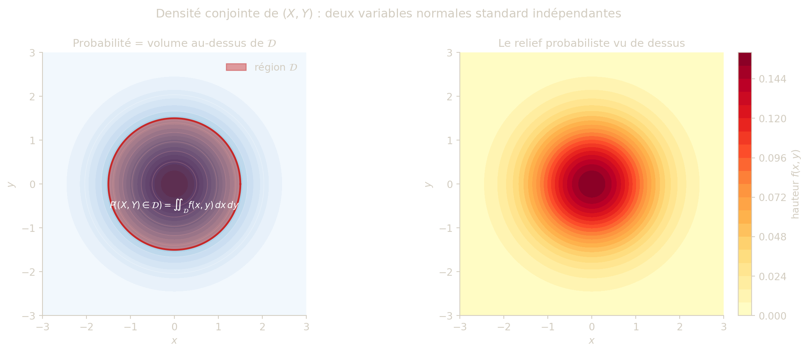

biv_pdf2 = (x, y, rho) => {
const c = Math.max(1 - rho * rho, 1e-8);
return Math.exp(-(x * x - 2 * rho * x * y + y * y) / (2 * c)) / (2 * Math.PI * Math.sqrt(c));
}
biv_pdf1 = (x, mu = 0, s = 1) => Math.exp(-0.5 * ((x - mu) / s) ** 2) / (s * Math.sqrt(2 * Math.PI))
viewof biv_rho = Inputs.range([-0.95, 0.95], {label: "Corrélation ρ :", value: 0.0, step: 0.05})
NoteDéfinition — Couple de variables aléatoires continues
Un couple de variables aléatoires continues est une application \[ (X,Y):\Omega\to\mathbb{R}^2, \qquad \omega\mapsto (X(\omega),Y(\omega)). \]
TipQu’est-ce qu’un couple de variables aléatoires ?
Chaque résultat \(\omega\) de l’expérience aléatoire produit simultanément deux valeurs \((X(\omega), Y(\omega))\). On peut penser à un individu tiré au hasard dans une population : \(X(\omega)\) est sa taille, \(Y(\omega)\) son poids. Le couple \((X, Y)\) décrit la distribution jointe de ces deux quantités dans la population.
L’intérêt fondamental du couple est qu’il capture la relation entre \(X\) et \(Y\) — information que les lois individuelles de \(X\) et \(Y\) ne contiennent pas. Connaître séparément la loi de la taille et la loi du poids ne dit pas si, dans la population, les individus grands tendent aussi à être lourds. C’est la loi conjointe qui encode cette structure.
Formellement, la loi du couple est une mesure de probabilité sur \(\mathbb{R}^2\) : pour toute région \(\mathcal{D}\) du plan, \(P\bigl((X,Y) \in \mathcal{D}\bigr)\) est la probabilité que l’issue aléatoire tombe dans \(\mathcal{D}\). Lorsque cette mesure admet une densité \(f\), on dit que le couple est absolument continu, et toutes les probabilités se calculent par intégration de \(f\) sur des régions du plan.
Densité de probabilité sur \(\mathbb{R}^2\)
NoteDéfinition — Densité sur \(\mathbb{R}^2\)
Une fonction \(f : \mathbb{R}^2 \to \mathbb{R}\) est une densité de probabilité sur \(\mathbb{R}^2\) si :
- \(f(x,y)\ge 0\) pour tout \((x,y)\),
- \(f\) est intégrable sur \(\mathbb{R}^2\),
- \(\displaystyle \iint_{\mathbb{R}^2} f(x,y)\,dx\,dy = 1\).
L’intuition géométrique est celle d’un relief : \(f(x,y)\) représente la “hauteur” en chaque point du plan. La condition \(\iint f = 1\) signifie que le volume total sous ce relief vaut exactement \(1\). La probabilité que le couple \((X,Y)\) tombe dans une région \(\mathcal{D}\) est \(\iint_{\mathcal{D}} f(x,y)\,dx\,dy\), c’est-à-dire le volume du morceau de relief situé au-dessus de \(\mathcal{D}\). Plus la densité est élevée en un point, plus ce point est probable — mais la probabilité d’une valeur exacte \((x_0, y_0)\) est toujours nulle, exactement comme dans le cas unidimensionnel.

Explorateur interactif — Corrélation et densité conjointe
Faites varier le coefficient de corrélation \(\rho\) pour observer l’effet sur la forme de la densité. Quand \(\rho = 0\), les contours d’équiprobabilité sont des cercles et les variables sont indépendantes. À droite : la densité conditionnelle \(f_{Y|X}(y\mid 1.5)\) se déplace avec \(\rho\), illustrant que la loi de \(Y\) sachant \(X = 1.5\) dépend du coefficient de corrélation.
NoteDéfinition — Couple absolument continu
Le couple \((X,Y)\) est dit absolument continu s’il existe une densité conjointe \(f\) telle que, pour tous intervalles \(I,J\subset\mathbb{R}\), \[ P(X\in I,\ Y\in J) = \iint_{I\times J} f(x,y)\,dx\,dy. \]
CautionExemple 2 — Densité exponentielle sur le quadrant
Soit \[ f(x,y)= \begin{cases} e^{-(x+y)} & \text{si } x\ge 0,\ y\ge 0,\\ 0 & \text{sinon.} \end{cases} \] Montrer que \(f\) est une densité sur \(\mathbb{R}^2\).
TipSolution — Exemple 2
La positivité est immédiate. Ensuite : \[ \iint_{\mathbb{R}^2} f(x,y)\,dx\,dy = \left(\int_0^{+\infty} e^{-x}\,dx\right) \left(\int_0^{+\infty} e^{-y}\,dy\right)=1\cdot 1=1. \] Donc \(f\) est bien une densité.
Fonction de répartition conjointe
NoteDéfinition
La fonction de répartition du couple \((X,Y)\) de densité \(f\) est \[ F(x,y)=P(X\le x,\ Y\le y)=\int_{-\infty}^{x}\int_{-\infty}^{y} f(u,v)\,dv\,du. \]
ImportantProposition (admise)
Aux points où \(f\) est continue, \[ f(x,y)=\frac{\partial^2 F}{\partial x\partial y}(x,y). \]
La densité conjointe et la répartition conjointe caractérisent la loi du couple.
La fonction de répartition conjointe \(F(x,y)\) est l’analogue bidimensionnel de la répartition usuelle : elle cumule la probabilité d’être dans le “quadrant inférieur gauche” \((-\infty, x] \times (-\infty, y]\). La proposition ci-dessus établit le lien fondamental avec la densité : dériver \(F\) successivement par rapport à \(x\) puis par rapport à \(y\) redonne \(f\). C’est le pendant exact de la relation \(F' = f\) du cas unidimensionnel, généralisée à la dimension deux.